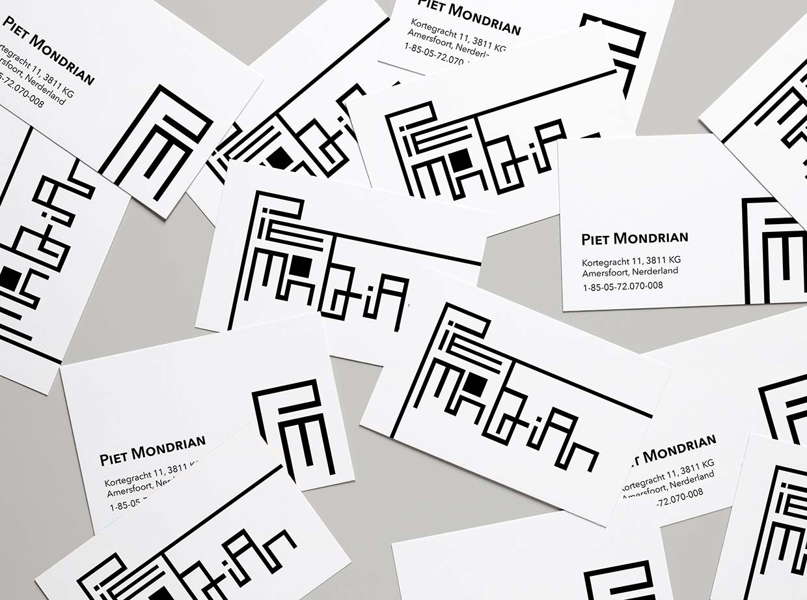
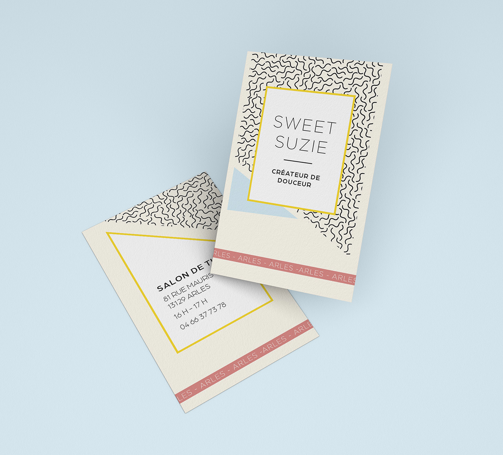

Projects
// Two goldfish

For this subject, we were asked to illustrate through a brief description the scene described:
«On a wooden box there is an aquarium with two goldfish and a filled vase».
// Postcard Piet Mondrian
I didn’t specifically use a typography for this typeface, however the Architype Van Doesburg font was a source of inspiration in the creation of my modular letters.
Read More// Smokey Joe & The Kid

Creation of a visual identity based on a modular typography for the release of the new album:
«War is Over» by Smookey Joe & The Kid.
This typography was entirely made from paper cut out to participate paper cut to give a childish handmade look.
// Tea Room
Description of my project and how I worked on it.
Read MoreMy project title
Description of my project and how I worked on it.
Read MoreMy project title
Description of my project and how I worked on it.
Read MoreMy project title
Description of my project and how I worked on it.
Read MoreMy project title
Description of my project and how I worked on it.
Read MorePhotography


About me
My name is Ambre Geuljans,
I’m 20 years old and currently third year student in bachelor graphic design at ECV Bordeaux in France.
Since childhood visuals have always been more appealing to me than words, herald of ideas, emotions.
I love learning about news things whether it’s new technique, new designer or new artist to sharpen my eyes.
Contact me here !
Email: ambre.geuljans@gmail.com
Phone: 06.51.30.34.75